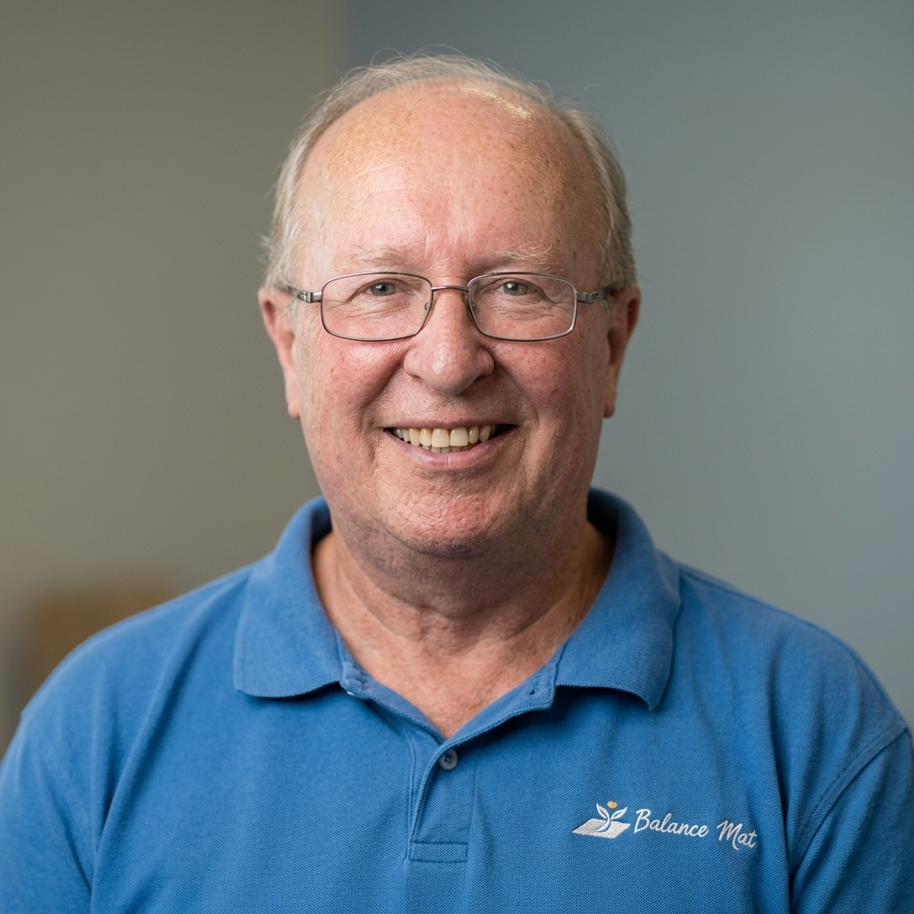
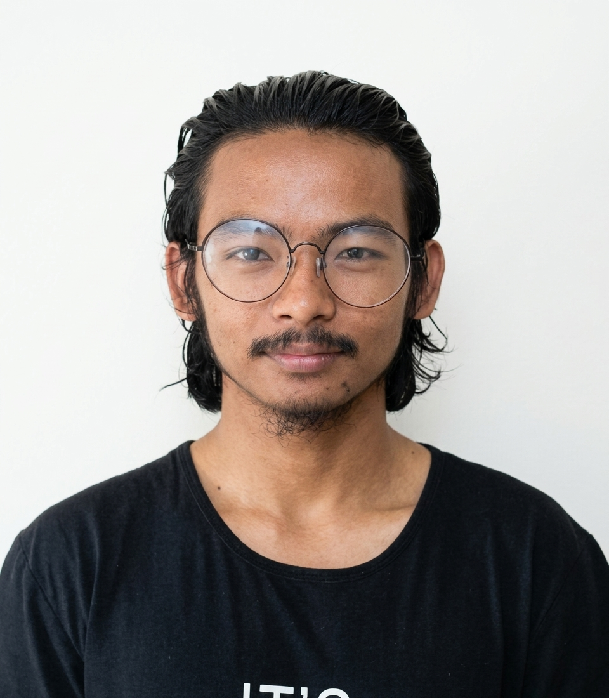
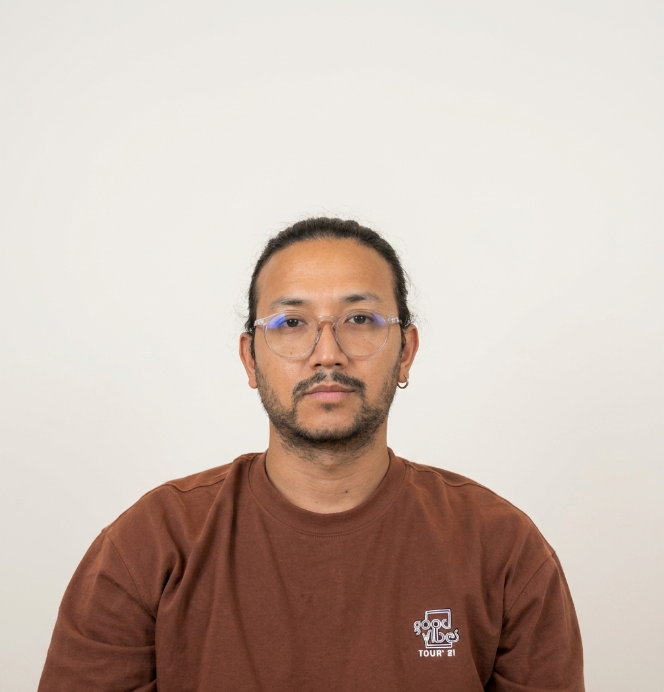

Meet the team
From the original invention to today's technology, each person brings a different expertise to Balance Mat.

Inventor of the Balance Mat, responsible for its development, commercialisation and intellectual property strategy across Australia, Singapore and the United States.
Learn more
Ian holds a BSc (Honours) from Monash University and spent over two decades in technology commercialisation and industry development — including as founder and CEO of Sensol Ltd and Managing Director of the Environment Industry Development Network — before turning his focus to postural sway assessment in 2016. He has led the Balance Mat's research, development and IP strategy ever since, steering it through patent grants in all three jurisdictions.

Bridges the engineering and clinical sides of the Balance Mat, translating sensor data into validated, peer-reviewed science.
Learn more
Abishek holds a Master's degree in Computer Software Engineering from Federation University Australia.

Designs and builds the Balance Mat's graphical user interface — the layer clinicians and researchers use every day.
Learn more
Binod holds a Master's degree in Software Engineering from Federation University Australia. Since joining Balance Mat Pty Ltd in March 2022, he has designed and developed the Balance Mat's interface — a living product that continues to evolve as new testing protocols and statistical analyses are added to the platform.

Turns raw postural sway measurements into insights that support both product development and clinical use.
Learn more
Bipin holds a Master's degree in Information Technology, specialising in Data Science, from Charles Sturt University. He manages Balance Mat's digital operations and data analysis end to end.